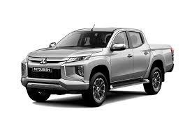

Hər şey 1870-ci illərdə başladı.Gənc sahibkar İvasaki Yataro Tsukomo Şokai adlı kiçik paroxod şirkətinin əsasını qoydu və 1875-ci ildə adı bir neçə dəfə dəyişildikdən sonra o, "Mitsubishi Mail Steamship Company" ("Mitsubishi" potç paroxod şirkəti) adlandırılmağa başladı – hazırkı bütün müasir "Mitsubishi" şirkətlərinin əcdadı bu cür yarandı. İvasaki ailəsi "Mitsubishi" şirkətinin sahibi idi və onu idarə edirdi. Fəaliyyət sahəsi sürətlə inkişaf edən şirkət müharibəyə qədər Yaponiyada (II Dünya müharibəsinə qədər) ən böyük və güclü müxtəlifcəhətli şirkətlərdən birinə çevrildi. 1945-ci ilin sonu üçün "Mitsubishi" gəmiçikliklə yanaşı,gəmiqayırma,bank fəaliyyəti,nəqliyyət xidmətləri,faydalı qazıntıların hasilatı,daşınmaz əmlakla əməliyyatlar,kimya istehsalı və bir çox digər fəaliyyət növləri ilə məşğul olmağa başladı. İvasaki sahibkarlar ailəsindəki yapon həssaslığı,ntizam və kəskin məsuliyyət hissi "Mitsubishi" şirkətlərində bu günədək qorunub saxlanılır."Mitsubishi"nin avtomobil istehsalçısı kimi bərqərar olduğu iyirmi il ərzində bütün idərəedicilər yeniliklər yaratmaq,təzə texnologiyaları o vaxtlar yaranmaqda olan Yaponiya sənayesində tətbiq etmək təşəbbüsünə yönəldilmişdi. Bu təşəbbüs "Model-A" tarixi minik avtomobilindən başlayıb.4 il ərzində istehsal edilən bu avtomobil cəmiyyət tərəfindən o qədər yüksək qiymətləndirilib ki,1922-ci ildə o,Yaponiya Sənaye sərgisinin eksponatına çevrilib."Model-A" "Mitsubishi"yə Yaponiyanın başlıca avtomobil istehsalçılarından biri kimi bərqərar olmaqda kömək edib. 1918-ci ilin əvvəlində "Mitsubishi" özünün ilk yük maşınını, eksperimental T1 modelini yaradır.T1 yük maşını Yaponiya hökumətinin sponsorluq etdiyi 1000-kilometrlik testdən uğurla keçir və öz konstruksiyasının uzunömürlüyünü və etibarlığını təsdiq edir.Mitsubishi" üçün 1931-ci il avtomobilqayırma sahəsində ilk böyük sıçrayış ili oldu – "Mitsubishi" kollektivi Yaponiyada avtomobil nəqliyyatı üçün ilk dizel mühərriki (yanacağın bilavasitə vurulması sisteminə malik, gücü 70 a.g. olan 450AD modeli) yaratdı.Bir ildən sonra ilk, o vaxtlar üçün ən böyük və güclü, "Fuso" yük şöbəsinin bütün dünyada məşhur avtomobillərinin əcdadı olan "Mitsubishi" avtobusu (B46) buraxılır.
